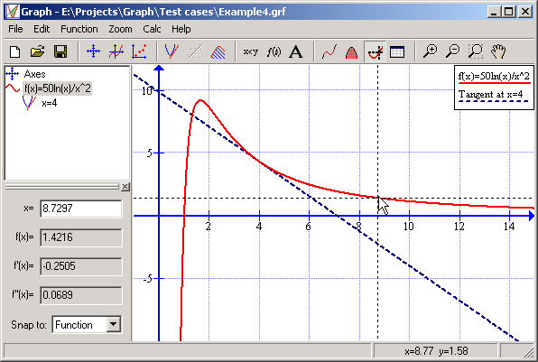

|
With Graph you can trace a function with the mouse by clicking on the graph, or you can enter an x-coordinate for which you want the function evaluated. The program will then tell you the function value f(x) and the first two derivatives f'(x) and f''(x) evaluated at the given coordinate. |